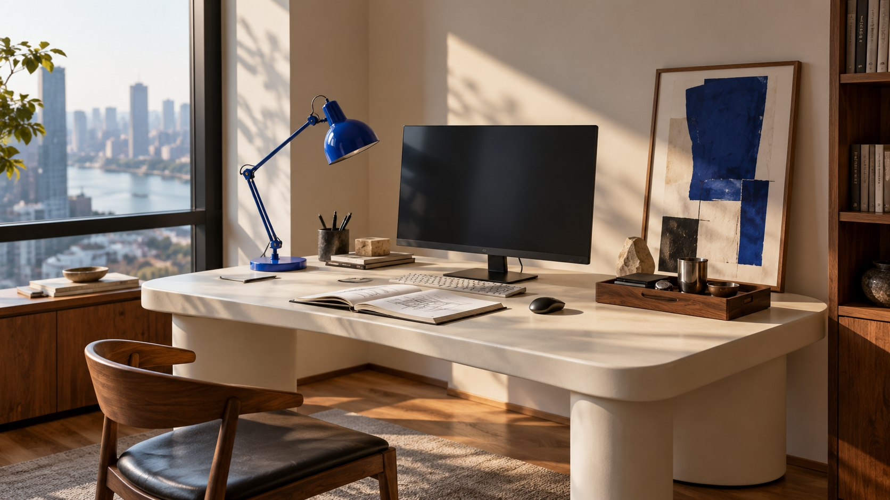

Đẹp trên ảnh, đã hợp với bạn?
Đọc bài viếtThu gọn
Một góc bàn đẹp trong ảnh có thể thiếu chỗ cho cuốn giáo trình bạn luôn mở bên cạnh laptop. Cũng có thể bàn phím lớn đang chiếm phần diện tích bạn cần để viết. Hãy thử dùng góc bàn hiện tại trọn một buổi và ghi lại ba điều: món nào được chạm tới nhiều nhất, chỗ nào thường bị chật, món nào gần như không dùng.
Từ đó, chọn một việc cần cải thiện trước, chẳng hạn dành thêm chỗ viết hoặc gom các vật nhỏ vào khay. Khi bố cục đã thuận tay, bạn mới thêm màu sắc hay một chi tiết cá nhân. Một góc bàn đáng ngồi vào mỗi ngày nên phản ánh thói quen của chính bạn.